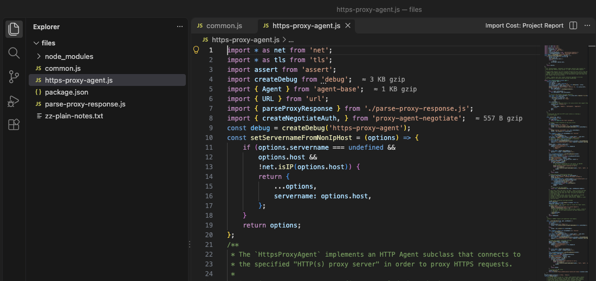

Open files in VS Code and Cursor / Code and APIs
See the size of each JavaScript or TypeScript import in VS Code
Import Cost & Bundle Size shows a minified and gzip size beside each package import in JavaScript, JSX, TypeScript and TSX files in VS Code. It works from the dependencies installed in your project, on your computer, with no account, no telemetry and no network calls of its own. The inline sizes are free. Zovo Pro (USD 19 once) adds a project report with the size of every installed package, a gzip size budget saved as JSON for CI, and a comparison of imports with main, with 3 free tries each.
Free, MIT license. Extension ID zovo.zovo-import-cost, version 0.1.1. Needs VS Code 1.90.0 or newer.

Steps in VS Code
- Install Import Cost & Bundle Size from the Marketplace, or press Ctrl+P (Cmd+P on macOS) and run
ext install zovo.zovo-import-cost. - Install your project's dependencies (for example with
npm install), so the packages are on disk. - Open a JavaScript, JSX, TypeScript or TSX file. The gzip size appears at the end of each package import line. A package that is not installed shows
install to measure, and Node built-ins such asfsornode:tlsget no size. - Change an import, for example to a smaller package or a single function, and the size updates.
- Packages over the 5 MB source limit are skipped by default, and your source files are never changed.
Where Zovo Pro saves time
The inline sizes for JavaScript, JSX, TypeScript and TSX imports are free, with no account, no telemetry and no network calls of the extension. There is no trial timer and no license banner.
When the bundle must stay under a limit, Set Size Budget sets a gzip threshold for the project and saves a JSON result for CI, with passed, complete and the size of each package. The other two Pro tools are the Project Report, with the minified and gzip size of each installed package, and Compare with Main, which compares the imports in files changed on your branch with main.
With Set Size Budget (Zovo Pro)
- Run "Import Cost: Set Size Budget" from the Command Palette, or right-click
package.jsonin the Explorer and pick "Zovo Pro: Gzip size budget for CI". - Enter the gzip threshold for the project.
- Read the result and keep the JSON file for your CI check.
Set Size Budget works 3 times on your computer before it asks for a license, and a try counts only when you get a result. Opening a file shows no popup and no countdown.
Zovo Pro costs USD 19 once. It is not a subscription, and it turns on the Pro tools in every Zovo extension, not only Import Cost & Bundle Size. After a card payment (Stripe) your license key shows on the next page. In VS Code, run "Zovo Pro: Enter Zovo Pro license key" from the Command Palette and paste it. The key is checked on your computer, with no network call. With GitHub Sponsors, pick the "$19 one time" tier, then run "Zovo Pro: I already paid: unlock with GitHub Sponsors" and sign in with the same GitHub account. With PayPal, send USD 19 with "Zovo Pro" in the note and the key comes by email within a day.
A team of 5: USD 59 once, by card or by PayPal. Every rule and every Pro tool is on the Zovo Pro page.
Steps in Cursor, Windsurf or VSCodium
- Open the Extensions view with Ctrl+Shift+X (Cmd+Shift+X on macOS).
- Search for
zovo.zovo-import-costand click Install. Cursor, Windsurf and VSCodium install from Open VSX, where it is published aszovo/zovo-import-cost. - If your editor has no gallery, download the .vsix from the Open VSX page and run "Extensions: Install from VSIX...".
- Then use it the same way as in VS Code.
What Import Cost & Bundle Size handles
- Static
importstatements and directrequire()calls. - JavaScript, JSX, TypeScript and TSX files.
- Sizes from the packages installed in this workspace, measured on your computer.
What it does not do
- Dynamic imports, custom aliases and bundler plugins are not read.
- Sizes keep a package's exported API in the estimate, so a production bundler may remove more code.
- The branch comparison uses committed changes between
mainandHEADand the dependencies installed in this workspace. Uncommitted edits are not included. - It does not run your production bundler.
Other options
- Import Cost (
wix.vscode-import-cost, 5.6 million installs, on Open VSX). Its own description: "Display import/require package size in the editor". - Bundlephobia. A website that shows the minified and gzip size of an npm package before you install it.
Install counts and Open VSX status were checked on 12 November 2026. Descriptions in quotes are the extensions' own.
Questions
Can VS Code show the size of an import without an extension?
No. VS Code shows no package sizes. You need an extension, or a bundle analyzer after a build.
Why does an import show no size?
The package must be installed in the project (otherwise the line says install to measure), and it must be a static import or a direct require(). Node built-ins get no size, and packages over the 5 MB source limit are skipped by default.
Is the size the same as in my production bundle?
Not always. The estimate keeps the package's exported API, so tree shaking in a production bundler may remove more code.
Does it work in Cursor or Windsurf?
Yes. Cursor, Windsurf and VSCodium install extensions from Open VSX. Search for the extension in their Extensions view and install it there.
More about Import Cost & Bundle Size
Read the Import Cost & Bundle Size page for every feature and setting, or the source code on GitHub.
Related guides
- Open a SARIF file in VS Code
- Preview a Swagger or OpenAPI file in VS Code
- Preview an HTML file with its CSS and images in VS Code
- Test a regex in VS Code
Zovo Pro and support
Zovo Pro: USD 19 once, every Zovo viewer. It turns on the Pro tools in this extension and in the other Zovo extensions you use. The free features stay free.
After a card payment your license key shows on the next page. Paste it with the command "Zovo Pro: Enter a key".
You can also support the work with no Pro:
Need your format supported?
Open a format request with a sample file, and I reply there whether it can be done. For USD 299 once, through this GitHub Sponsors tier, I add your file format or a missing feature to this extension, with tests, within 7 days.